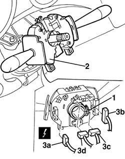
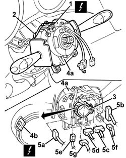

5550A12 complete stalk unit - r+r for versions with air bag
- Path
- Procedures > 55 ELECTRICAL EQUIPMENT > 5550 MANOEUVRING AND WARNING SIGNALS > 5550A stalk unit > 5550A12 complete stalk unit - r+r for versions with air bag
- Kind
- repair procedure (removal / refitting; the operation number is the code)
- Applies to
- all engines; all production periods
- Interactive page
- https://sloeber94.github.io/elrnDB-a156/en/#/3238476
Applies to: all engines; all production periods
 Removing
Removing
 Refitting
Refitting4110A11 steering wheel - r+r for replacement or check for versions with air bag
7040A26 steering column trim - r+r
5580C12 clock spring for air bag module on steering wheel r r
Closely follow the safety regulations established for this operation.
1. Loosen the band fixing the steering column switch unit.
2. Move the steering column switch unit.
3. Disconnect the electrical connections (3a, 3b, 3c).
 | Name | Connector |
|---|---|---|
3a | Steering column switch unit |
| Name | Connector |
|---|---|---|
3b | Steering column switch unit |
| Name | Connector |
|---|---|---|
3c | Steering column switch unit |
| Name | Connector |
|---|---|---|
3d | Steering column switch unit |

Applies to: all engines; all production periods
Refitting
RemovingCheck that the steering column switch unit is not damaged and, if necessary, conduct an electrical test on it.
Connect the electrical connection.
Refit the steering column switch unit.
Tighten the band fixing the steering column switch unit.
5580C12 clock spring for air bag module on steering wheel r r
7040A26 steering column trim - r+r
4110A11 steering wheel - r+r for replacement or check for versions with air bag
Check the operation of the systems involved (lights, wipers, horns).
Applies to: all engines; production: da 03/02 a 09/03, da 10/03
Removing
Refitting4110A11 steering wheel - r+r for replacement or check for versions with air bag
7040A26 steering column trim - r+r
1. Disconnect the electrical connections.
| Name | Connector |
|---|---|---|
1 | Clock spring coupling |
2. Release the wiring from the retainer.
3. Loosen the band fixing the steering column switch unit.
4. Move the steering column switch unit (4a) after having released the tab (4b) from the tooth on the steering column.
5. Disconnect the electrical connections (5a, 5b, 5c, 5d, 5e, 5f, 5g).
| Name | Connector |
|---|---|---|
5a | Steering column switch unit |
| Name | Connector |
|---|---|---|
5b | Steering column switch unit |
| Name | Connector |
|---|---|---|
5c | Steering column switch unit |
| Name | Connector |
|---|---|---|
5d | Steering column switch unit |
| Name | Connector |
|---|---|---|
5e | Steering column switch unit |
| Name | Connector |
|---|---|---|
5f | Cruise Control |
| Name | Connector |
|---|---|---|
5g | Steering sensor |

Applies to: all engines; production: da 03/02 a 09/03, da 10/03
If necessary, 5580C12 clock spring for air bag module on steering wheel r r
Applies to: all engines; production: da 03/02 a 09/03, da 10/03
Refitting
RemovingCheck that the steering column switch unit is intact and shows no signs of damage.
If necessary, 5580C12 clock spring for air bag module on steering wheel r r .
Connect the electrical connections to the steering column.
Fit the steering column switch unit in place and engage the tab wih the tooth on the steering column.
Tighten the band fixing the steering column switch unit.
Connect the electrical connection to the clock spring and engage the wiring with the retainer.
7040A26 steering column trim - r+r
4110A11 steering wheel - r+r for replacement or check for versions with air bag
Test the operation of the systems involved (lights, wipers, horns, etc.).
Topics linked from this page (13)
- 4110A11 steering wheel - r+r for replacement or check for versions with air bag
- 5580C air bag system
- 5580C12 clock spring for air bag module on steering wheel r r
- 5580C18 air bag module - r+r
- 7040A26 steering column trim - r+r
- D47 Clock spring coupling ( FACIA )
- H5A Steering column switch unit ( FRONT )
- H5B Steering column switch unit ( FACIA )
- H5C Steering column switch unit ( FACIA )
- H5D Steering column switch unit ( FACIA )
- H5E Steering column switch unit ( FACIA )
- H7 Cruise Control
- K58 Steering sensor
Topics that link to this page (28)
- I01 SIDE LIGHTS/NO. PLATE LIGHTS NOT WORKING
- I05 DIPPED HEADLAMPS NOT WORKING
- I06 MAIN BEAM HEADLAMPS NOT WORKING
- I10 DIRECTION INDICATORS / HAZARD WARNING LIGHTS / NOT WORKING
- I11 DIRECTION INDICATORS / HAZARD WARNING LIGHTS / NOT WORKING INTERMITTENTLY
- J01 WINDSCREEN/REARSCREEN WASHERS NOT WORKING
- 3330B42 pedal unit mount - r rfor right hand drive versions
- 3330D03 brake servo/pump assembly - r r for right-hand drive versions
- 3350E20 steering angle sensor r r
- 4110A30 Steering control shaft SUPPORT - R.R.
- 5010B24 under-facia air ducts r r
- 5020A10 heater box - r+r
- 5020L10 additional heater system boiler - r r
- 5040B30 expansion valve (tube orifice) - r+r
- 5040C10 air conditioner box - r+r
- 5040C50 air conditioner heater radiator - r+r
- 5040D52 air inlet and recirculation flap actuator - r r
- 5040D76 air contitioner distribution flap control motor - r r
- 5040D84 air conditioner left hand air mixer flap control motor - r r
- 5040D86 air conditioner right hand air mixer flap control motor - r r
- 5040D90 air conditioner system wiring bundle - r r
- 5505A26 bonnet wiring - r r
- 5505C31 under-facia wiring - r r
- 5505C41 cabin wiring - r r
- 5520A12 ignition switch assembly - r r for versions with air bag
- 5580A10 cruise control lever assembly - r+r
- 7040A10 instrument facia trim - r+r
- 7040A97 facia trim support beam - r r